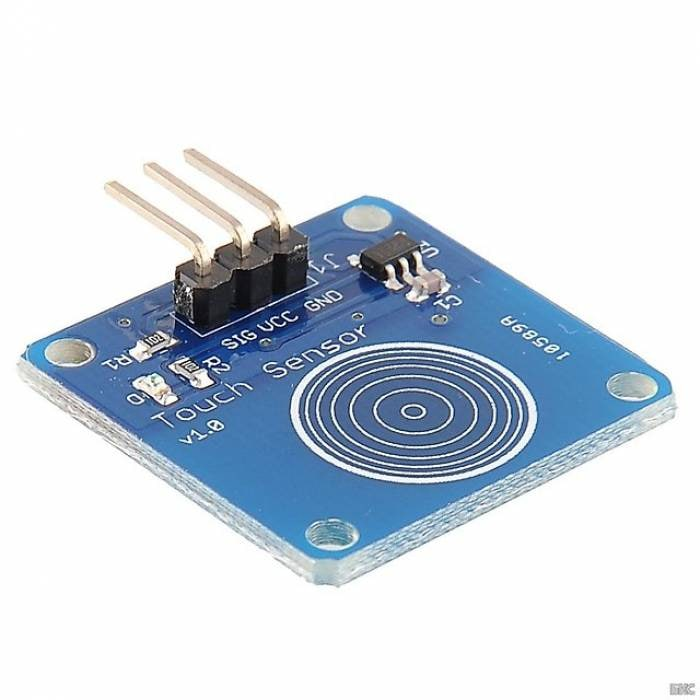
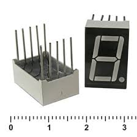
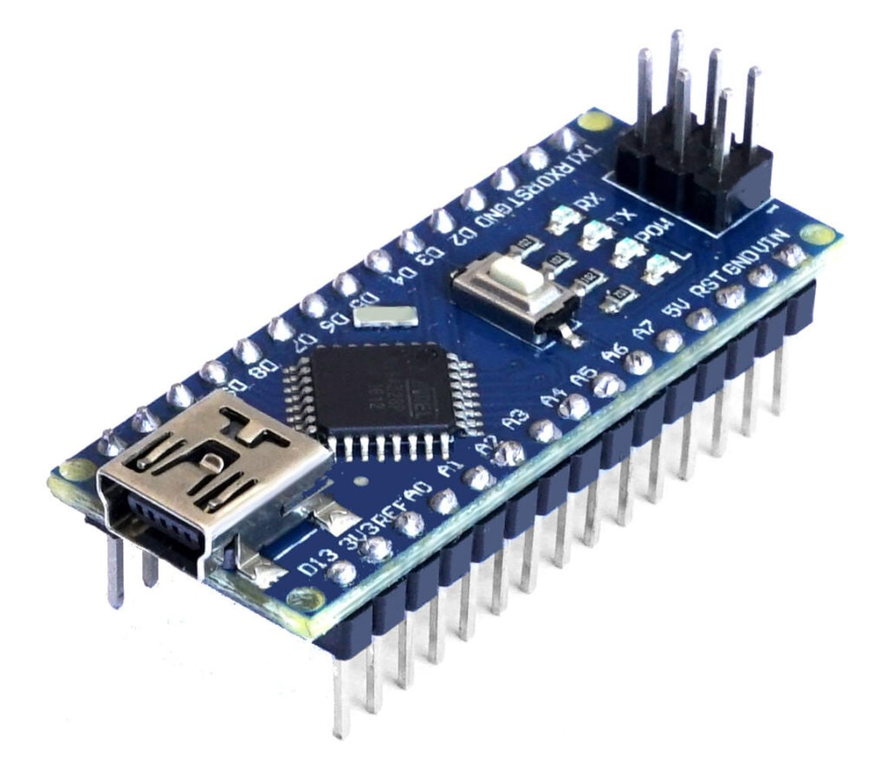

|  | TTP223B | Sig -> Arduino D2 VCC -> +5v GND -> Gng |
| kratkoe opisanie | ||
| Статья, посвященная работе с TTP223B |
|  | KEM-3101BR | A -> Arduino D4 B -> Arduino D3 C -> Arduino D6 D -> Arduino D7 E -> Arduino D8 F -> Arduino D9 G -> Arduino D10 H -> Arduino D5 |
| kratkoe opisanie | ||
| Статья, посвященная работе с KEM-3101BR |
|  | Arduino Nano | kuda podklucheno |
| kratkoe opisanie | ||
| ssilki na statji |
| kod programmi |